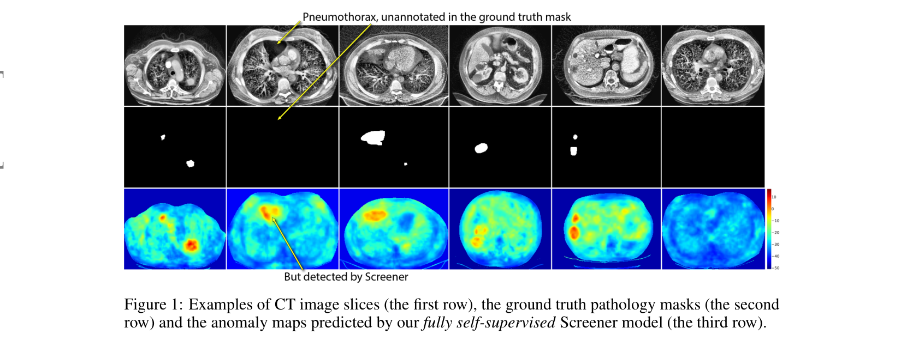

Supervised pathology segmentation only finds the few classes someone has labeled. Screener flips the framing: any pathology is a statistical anomaly relative to healthy tissue, so train a density model $q(y \mid c)$ on dense self-supervised CT embeddings and call low-density regions abnormal. Two ingredients make density-based UVAS work for medical CT for the first time: (1) replace ImageNet/STU-Net feature extractors with a 3D UNet trained via dense SSL (DenseInfoNCE / DenseVICReg, §3.1) — supervised features are actively harmful here (Tab. 4); (2) replace sin-cos / anatomical positional encodings with a masking-invariant condition $c[p]$ learned the same way as the descriptor but with random masking augmentations (§3.2). The masking trick simplifies $q(y \mid c)$ enough that a diagonal Gaussian density matches a Glow normalizing flow (Tab. 3). Trained on 30k+ unlabeled CT volumes; voxel AUROC 0.96 / 0.87 / 0.90 / 0.93 on LIDC / MIDRC / KiTS / LiTS unsupervised, and a +49% Dice gain over nnUNet when fine-tuned with 25 cases (Tab. 1–2).
The Problem
Supervised CT segmentation only detects pathology classes that exist in someone's labeled dataset; many real pathologies (e.g. pneumothorax) stay unlabeled §1, Fig. 1
Reconstruction-based UVAS overfits to anomalies in uncurated training data; synthetic-anomaly methods fail to generalize to real pathology appearance §2.1, App. H
Density-based UVAS is the right framing — assumes anomalies are rare, not absent — but its descriptor has been an ImageNet CNN, which fails on CT due to domain shift §1, Tab. 4
Counter-intuitive: swapping ImageNet for a medically supervised encoder (STU-Net) makes things worse — AUROC 0.52 on LIDC vs ImageNet's 0.70 — features over-fit to organs §1, Tab. 4
Existing density-based methods condition $q(y \mid c)$ on hand-crafted sin-cos positional encodings — useless when CT scans aren't anatomically aligned §2.1, App. C
The Method
Descriptor model: 3D UNet $f_{\theta^\text{desc}}$ trained at full resolution via dense SSL (DenseInfoNCE or DenseVICReg) — positive pairs are voxels at the same anatomical position across two augmented crops §3.1, App. B
Condition model (NEW): same UNet trained the same way as the descriptor, but with random image masking as an extra augmentation. The condition $c[p]$ becomes invariant to local pathology while encoding global anatomy / patient context §3.2
Density model: $q_{\theta^\text{dens}}(y \mid c)$ learned by NLL minimization. Parameterized as a diagonal Gaussian or a Glow-style normalizing flow. Anomaly score is $-\log q(y[p] \mid c[p])$ at every voxel §3.3, App. D
Distillation pipeline: distill the modular descriptor + condition + density stack into a single regression UNet via MSE on score maps. The distilled model becomes a self-supervised pretraining for downstream supervised fine-tuning §3.4
Training scale & preprocessing: 30k+ unlabeled CT volumes (NLST + AMOS + AbdomenAtlas); CLAHE preprocessing is critical — without it, color jitter erases the pathology signal; 3 days each on a single H100 for descriptor + condition + density App. F
How It Works — Screener Pipeline
A simplified mental model of the modular UVAS framework. Architecture details in §3 and Fig. 2 of the paper.
Two UNets are trained the same way via dense SSL — positive pairs of voxel embeddings across augmented crops — but the condition UNet adds a random-masking augmentation. That forces $c[p]$ to be predictable from the unmasked context, hence ignorant of local anomalies. The density model then learns $q(y \mid c)$ from descriptor + condition pairs on healthy and unhealthy CT volumes alike. At inference, $-\log q(y[p] \mid c[p])$ is the per-voxel anomaly score — high where the descriptor lands in a low-density region given its anatomical context.
"The conditional density model $q_{\theta^{\text{dens}}}(y \mid c)$ can be viewed as a predictive model, which tries to predict descriptors based on the corresponding conditions. In this interpretation, anomaly scores $\{-\log q_{\theta^{\text{dens}}}(\mathbf{y}[p] \mid \mathbf{c}[p])\}_{p \in P}$ are position-wise prediction errors." — §3.3
"From the overlapping region of the two crops, we randomly select $n$ positions ... These descriptors form a positive pair, as they correspond to the same position in the original volume but are predicted from different augmentations." — §3.1
"We sample random image crops, pass them through the pretrained modular Screener to obtain ground truth anomaly score maps ... We then train a regression UNet model (last conv has one output channel without activation) to predict these score maps directly from the input image crops using a simple MSE loss." — §3.4
§1 — The core framing
"Our core assumption is that pathological patterns are statistically rarer than healthy patterns in CT images. This frames pathology segmentation as an unsupervised visual anomaly segmentation (UVAS) problem."
§3.2 — Why masking-invariance works
"The architecture and training procedure for the condition model $g_{\theta^{\text{cond}}}$ are exactly the same as those for the descriptor model, with the sole difference: random masking as an additional augmentation. ... the learned condition feature maps are designed to be invariant to the presence / absence of anomalies."
§1 — Why supervised features fail
"Supervised medical encoders like STU-Net might seem viable, but our experiments show they also underperform, likely because their features are too specific and lack discriminative information for pathology segmentation."
App. F — Why CLAHE preprocessing is load-bearing
"CLAHE ensures that color jitter augmentations preserve information about presence of pathologies during descriptor model training (otherwise, the quality of our method degrades largely)."
From the Paper · Fig. 1 (qualitative results)

Reproduced from arXiv:2502.08321, Fig. 1. Complements the SVG above: the SVG only labels symbolically what an "anomaly map" is — this figure shows what those maps actually look like and why Dice scores systematically under-estimate Screener's true positives (App. A).
Key Results
0.96
AUROC, LIDC unsup.
vs 0.87 next-best (Patched Diff.) · Tab. 1
0.93
AUROC, LiTS unsup.
+0.10 over best baseline · Tab. 1
+49%
Dice gain, LIDC FT
0.31 vs nnUNet 0.21 · 25 cases · Tab. 2
30k+
unlabeled CT volumes
NLST + AMOS + AbdomenAtlas · App. E
133M
params (modular)
350M after distillation · 5–10s/vol on H100 · App. F
Gauss ≈ NF
w/ masking-inv. cond.
0.96/0.84/0.87/0.90 (Gauss) vs 0.96/0.87/0.90/0.93 (NF) · Tab. 3
What Most Summaries Miss
Dice scores are systematically under-estimated, not the model's fault. Test datasets only label the headline pathology (lung cancer / pneumonia / kidney tumor / liver tumor), but Screener detects everything rare. App. A explicitly demonstrates true positives (e.g., the pneumothorax in Fig. 1) being counted as false positives. The honest metric is voxel-level AUROC sampled over labeled-pathology voxels and out-of-mask normal voxels — that's why the paper headlines AUROC, not Dice. §4.1, App. A
Supervised medical pretraining is actively harmful for this task. STU-Net (supervised on anatomical-structure segmentation) gets AUROC 0.52/0.44/0.52/0.64 — below ImageNet ResNet50 (0.70/0.66/0.64/0.64) on the same density-based pipeline (Tab. 4). The supervised features become organ-shape detectors, losing the discriminative noise needed to flag pathologies. The dense-SSL features keep that signal. Tab. 4
The masking-invariance trick is a model-simplicity win, not just an accuracy win. Tab. 3: with a fixed DenseVICReg descriptor, sin-cos / APE conditioning requires a Glow normalizing flow to hit AUROC 0.96/0.89/0.90/0.94. With masking-invariant conditions, a diagonal Gaussian density gets to 0.96/0.84/0.87/0.90 — competitive with the NF, with one MLP for $\mu(c)$ and $\Sigma(c)$ instead of an invertible network with act-norms, 1×1 convs and affine couplings. Tab. 3, App. D
CLAHE preprocessing is load-bearing, and the auxiliary input is the mask itself. App. F is unambiguous: without CLAHE, "the quality of our method degrades largely" because color jitter erases the very signal you want to detect. The condition model also concatenates the binary mask as a second input channel (`in_channels + 1` in condition_model.py), telling the network exactly what's been hidden — the masking-invariance is engineered, not just emergent. App. F, code
Reconstruction-based methods get worse with training. Patched Diffusion (App. H, Fig. 8): at 1 epoch the model can't reconstruct pathologies (great for detection), but by 7 epochs it learns to reconstruct them too (anomaly signal vanishes). Autoencoders fail in the same direction (App. H, Fig. 7) but for different reasons — they overfit while also producing blurry reconstructions of normal fine details. This is why Screener invests in density modeling, not reconstruction. App. H
Train/test domain shift is real but mostly absorbed. Training is on lung-screening (NLST) + abdominal (AMOS, AbdomenAtlas) volumes, but evaluation includes COVID chest CTs (MIDRC) and kidney/liver tumor CTs — which include patient cohorts and contrast conditions never seen at training. App. G's robustness study quantifies a measurable but small AUROC drop on low-dose vs high-dose and contrast vs non-contrast LIDC subsets; the paper frames this as preliminary. App. G, Fig. 5
Honest limitations the abstract doesn't dwell on. The rarity assumption breaks for common pathologies (false negatives) and statistical anomalies that aren't clinical (artifacts → false positives, e.g. the second row of App. G Fig. 6). Validated only on CT — transfer to MRI / X-ray is future work, and scaling laws (model + data) are explicitly listed as open questions. §6 limitations
Key Contributions
Dense SSL features for density-based UVAS: replace ImageNet / supervised medical encoders with a domain-specific 3D UNet trained at full resolution via DenseInfoNCE or DenseVICReg §3.1, App. B
Masking-invariant learned conditioning: the first SSL-learned condition for UVAS that captures global anatomy/patient context while staying ignorant of local anomalies. Simplifies $q(y \mid c)$ enough that a diagonal Gaussian matches a normalizing flow §3.2, Tab. 3
First large-scale UVAS evaluation in CT: 1,820 test scans across LIDC, MIDRC-RICORD, KiTS, LiTS — SOTA AUROC across all four §4.1, Tab. 1
A new self-supervised pretraining recipe: distill the modular UVAS pipeline into a single UNet via MSE on score maps. The resulting checkpoint matches VoCo and beats Model Genesis / SwinUNETR / DAE on 25-case fine-tuning §3.4, §4.2, Tab. 2
Direct predecessor — the conditional normalizing-flow UVAS framework Screener inherits and improves. Uses sin-cos positional encodings as conditions; Screener replaces them with masking-invariant SSL conditions.
Recent multi-scale flow-based UVAS, top-5 on MVTec-AD. Uses ImageNet features — included in Tab. 1 as a baseline (AUROC 0.71/0.67/0.63/0.63 on CT) to show natural-image features fail in CT.
Contrastive 3D medical SSL based on volume-region predictions. Strongest competing pretrained model at fine-tuning time; Screener matches or beats it across LIDC / LiTS (Tab. 2).
Origins of dense SSL — voxel/pixel-level positive pairs across augmented crops. Screener adapts these objectives to 3D medical and adds masking augmentation for the condition model.
Patched Diffusion Model (Behrendt et al., MIDL 2024)2303.03758
Strongest reconstruction-based medical UVAS baseline. App. H shows it overfits to anomalies during training, losing detection ability after 7 epochs — exactly the failure mode density-based methods avoid.
Related Papers
Directly Comparable — UVAS / Dense SSL / Medical UVAS